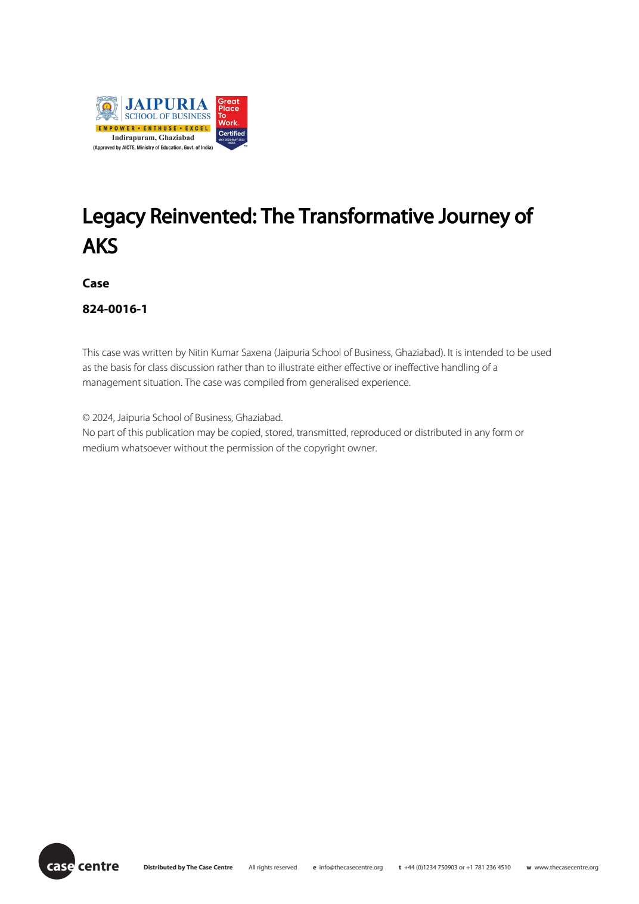
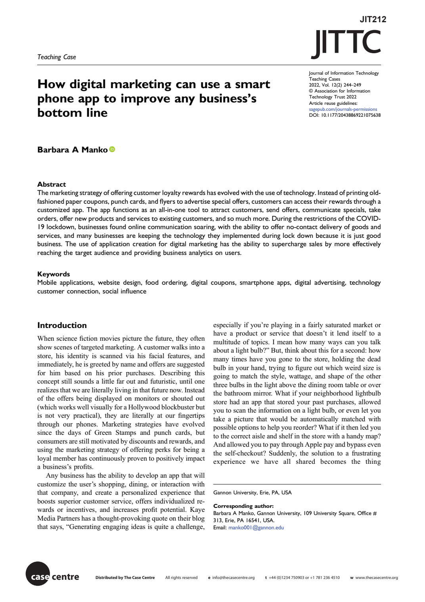

Total EPUBs processed: 17
| # | EPUB | First Page Image | TOC Links | Chapter XHTML Links | Split View (HTML + PDF) |
|---|---|---|---|---|---|
| 1 | Using Altman’s Z-score 124-0039-1_EPUB.epub | Open split view 124-0039-1.pdf | |||
| 2 | Capital Budgeting: Sensitivity Analysis 124-0041-1_EPUB.epub | Open split view 124-0041-1.pdf | |||
| 3 | The Role of a Management Controller in the Strategy of an Environmentally-Responsible Industrial Company - Role-play 124-0044-1_EPUB.epub | Open split view 124-0044-1.pdf | |||
| 4 | Short-run Equilibrium in Retail: Navigating Strategies for Business Success 224-0028-1_EPUB.epub | Open split view 224-0028-1.pdf | |||
| 5 | Indian Spice Brands Everest and MDH Masala Under Scanner 224-0049-1_EPUB.epub | Open split view 224-0049-1.pdf | |||
| 6 | ‘Queenfisher’ Beer: Can the Queen of Good Times Foster Diversity and Inclusion? 324-0100-1_EPUB.epub | Open split view 324-0100-1.pdf | |||
| 7 | Turbulence at Vistara – A Chink in Tata Group’s Airline Business Consolidation? 324-0135-1_EPUB.epub | Open split view 324-0135-1.pdf | |||
| 8 | Ola Parcel: Ola’s EV Parcel Service in India 324-0138-1_EPUB.epub | Open split view 324-0138-1.pdf | |||
| 9 | A New Chair at NLInvest (C): Enabling Cultural Change 424-0019-1C_EPUB.epub | Open split view 424-0019-1C.pdf | |||
| 10 | PUMA: Supply Chain Operations and Loyalty Programme 524-0057-1_EPUB.epub | Open split view 524-0057-1.pdf | |||
| 11 | Legacy Reinvented: The Transformative Journey of AKS 824-0016-1_EPUB.epub |  | Open split view 824-0016-1.pdf | ||
| 12 | Moolah Kicks: Women’s Sneaker Brand 824-0032-1_EPUB.epub | Open split view 824-0032-1.pdf | |||
| 13 | chaabi: The WhatsApp-Based Learning Platform 924-0016-1_EPUB.epub | Open split view 924-0016-1.pdf | |||
| 14 | Sustainable Luxury CCW240507_EPUB.epub | Open split view CCW240507.pdf | |||
| 15 | Financial Metrics at DelishGo e754_EPUB(1).epub | No preview | Open split view No matching PDF | ||
| 16 | Financial Metrics at DelishGo E754_EPUB.epub | Open split view E754.pdf | |||
| 17 | How Digital Marketing Can Use a Smart Phone App to Improve Any Business’s Bottom Line — Case from journal JIT212_EPUB.epub |  | Open split view JIT212.pdf |